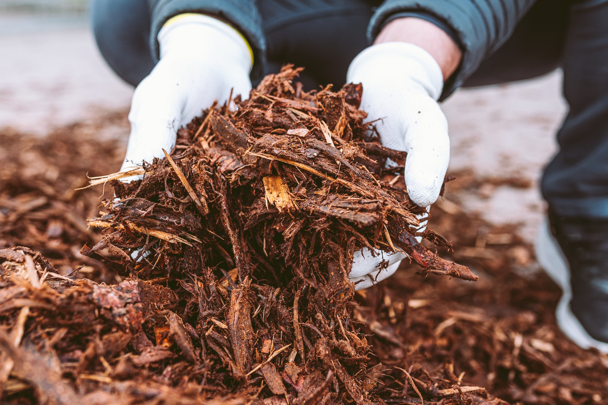

Leaves that stay put
Thick, wet layers can block light and air from reaching the lawn and make paths slippery or difficult to use.
Seasonal cleanup in South Charlotte
When leaves cover the lawn, beds, or walkways, we'll clear the buildup and leave the outdoor areas you use looking neater.

Image from the company’s existing websiteLeaf removal
A thick, wet layer of leaves can block light from the lawn and make paths slippery. Clearing leaves from the lawn and beds keeps the yard neater and makes it easier to see what needs attention next.
Tell us which areas you want cleared—lawn, planting beds, paths, or the whole yard—and we'll confirm timing and scope for your property.
Request a leaf removal estimate ↗Fall leaf cleanup in Charlotte
Big shade trees are part of the neighborhood. When leaves collect on lawns, beds, and walks, seasonal cleanup keeps those outdoor areas usable and easier to maintain.
Thick, wet layers can block light and air from reaching the lawn and make paths slippery or difficult to use.
If leaf fall is covering the grass again shortly after you clear it, ask about timing a cleanup for your property.
Removing accumulated leaves opens up lawn and bed areas and gives the yard a tidier appearance.
Let us know about the lawn, beds, walks, and areas that need attention.
We'll confirm current availability and what the cleanup includes before scheduling.
The team completes the requested leaf-removal work and leaves the property neat.
Timing depends on the trees around your home and how much leaf cover you want to manage. Contact us when buildup is getting ahead of your routine and we can discuss availability.
Include the areas you want cleaned in your request, including beds, so we can confirm the scope with you.
Ask about pairing leaf removal with lawn or bed maintenance. We’ll confirm which services can be scheduled together for your property.
Need a seasonal cleanup? Request a leaf-removal estimate or text the team.
Seasonal service
Contact SLS to ask about leaf removal for your property.
Get in touch ↗